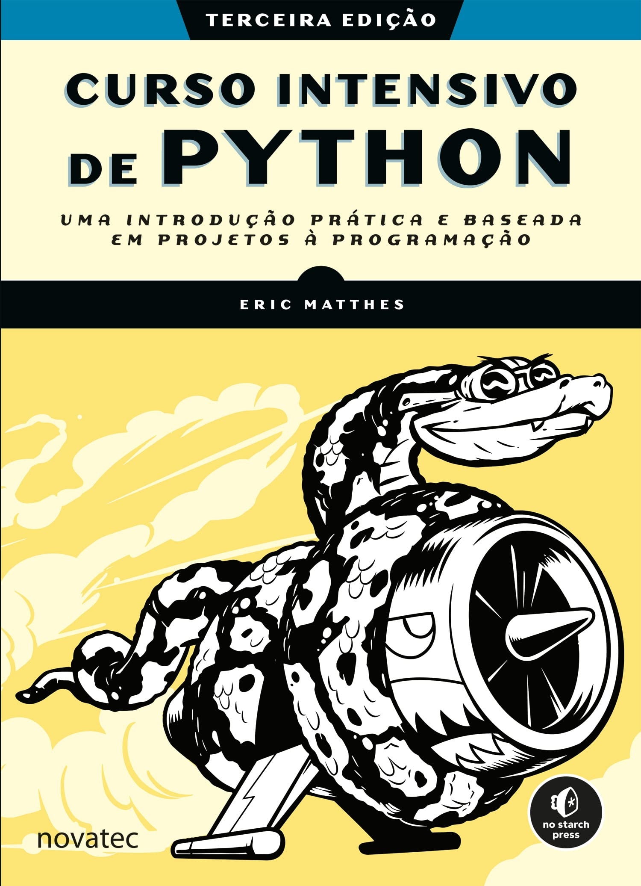
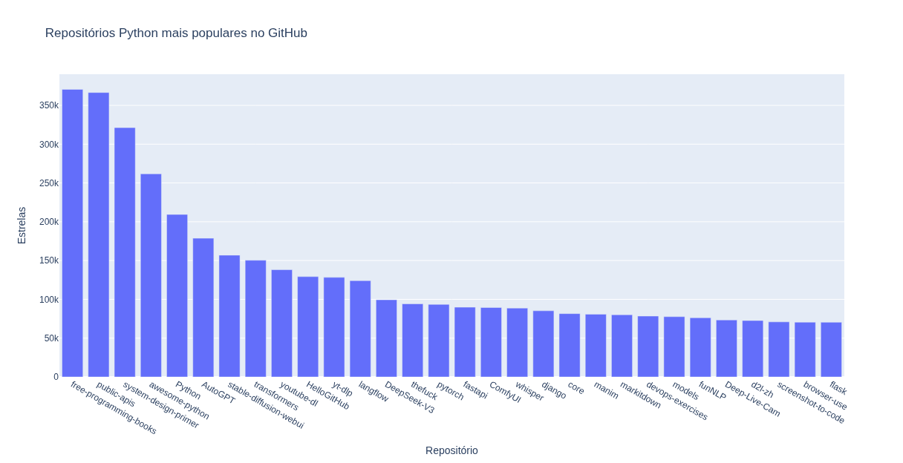
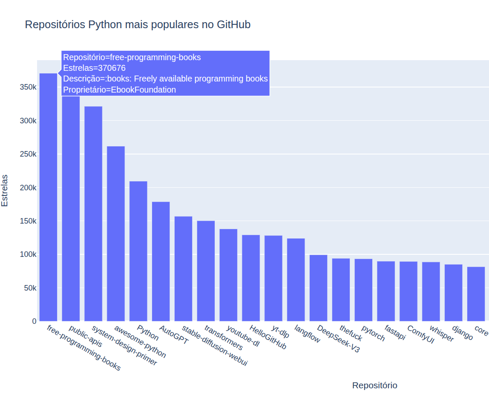
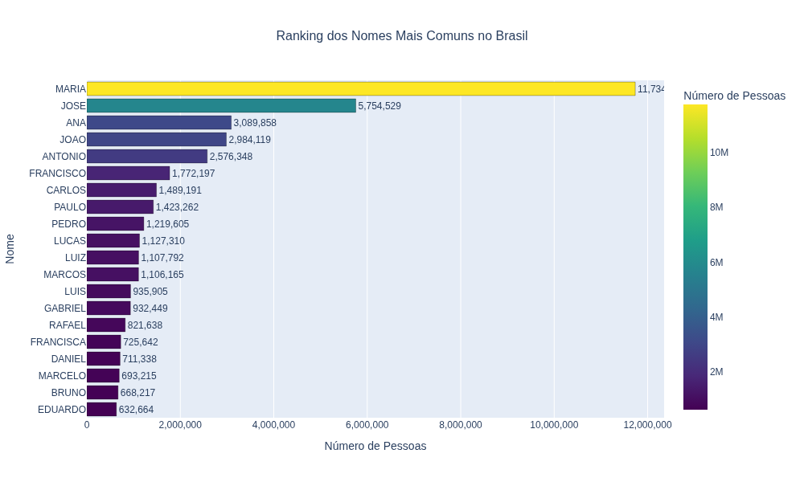
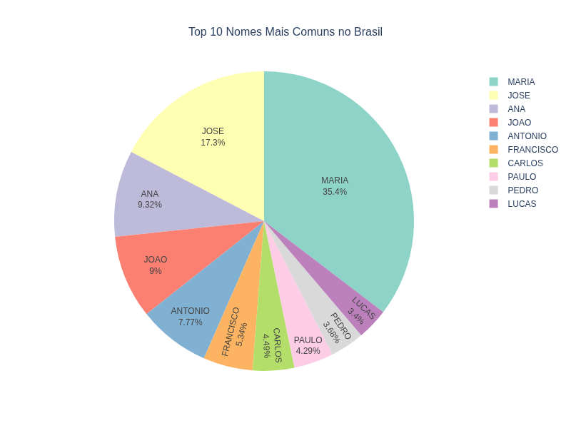
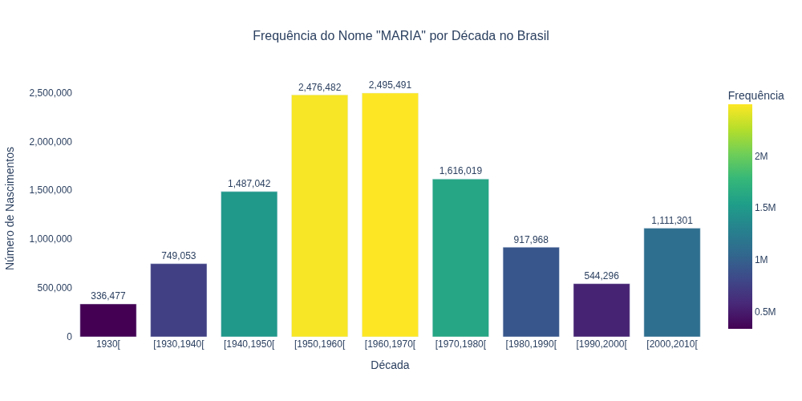
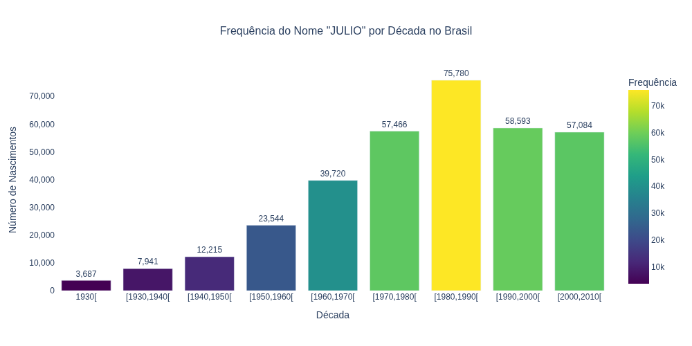
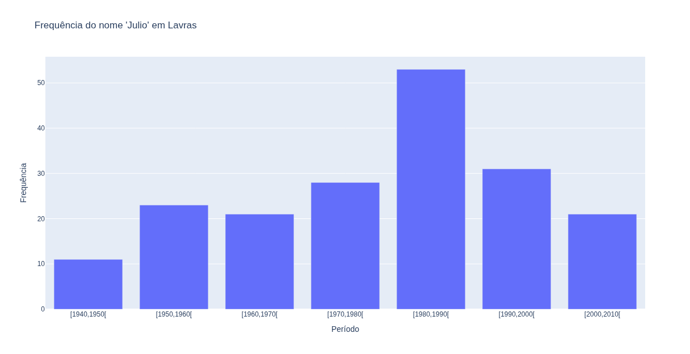
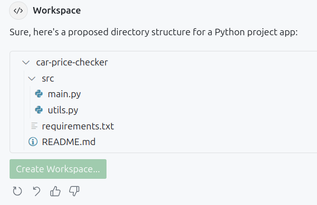

Trabalhando com APIs
PASIA - Aula T.8
DAC - ICET - Universidade Federal de Lavras
01/10/2025
O conteúdo dessa aula é inspirado no capítulo 17 do livro:

Introdução
Nesta aula vamos aprender a fazer programas que apresentam visualização de dados acessados via APIs.
- Usaremos APIs (Interfaces de Programação de Aplicações) para requisitar automaticamente informações específicas de um site.
- E usaremos essas informações para gerar visualizações.
O bacana dessa abordagem é que sempre que executarmos nossa aplicação
- serão utilizados os dados mais recentes disponíveis.
Usando uma API
Uma API (web) é a parte de um site desenvolvida para interagir com programas.
- Os programas que acessam uma API usam URLs (“links”) bem específicas para requisitar determinadas informações.
- Nós chamamos esse tipo de requisição de chamada de API.
Os dados solicitados são retornados em um formato que facilita o processamento.
- Geralmente JSON ou CSV.
A maioria das aplicações que usa algum tipo de fonte externa de dados,
- como apps que se integram a sites de redes sociais,
- dependem de chamadas de APIs.
Inclusive, é muito comum que um app de smartphone ou um site utilize várias APIs ao mesmo tempo.
Usando a API do GitHub
Começaremos com um exemplo de uso da API do GitHub.
- Ela permite a busca de diversas informações relacionadas, por exemplo, aos repositórios da plataforma.
Requisitando dados através de uma chamada de API
Antes de fazermos chamada de API via código, podemos ter uma ideia do que é uma chamada dessas acessando o link abaixo no nosso navegador.
- https://api.github.com/search/repositories?q=language:python+sort:stars
- Essa chamada retorna informações sobre repositórios Python mais populares atualmente hospedados no GitHub.
Vamos entender cada parte da URL de requisição.
https://api.github.com/: direciona a requisição para a parte do site do GitHub que responde às chamadas de API.search/repositories: instrui a API a realizar uma pesquisa em todos os repositórios públicos no GitHub.- Cada API pode ter uma ou mais instruções disponíveis.
?: indica que vamos passar parâmetros para a instrução.q=: o q vem de query, indicando que vamos fazer uma consulta.language:python: parâmetro que indica que queremos apenas os repositórios cuja linguagem principal seja Python.+sort:stars: ordena os repositórios pelo número de estrelas recebidas.
Quanto ao resultado da requisição, podemos ver que é retornado um JSON.
- Esse formato facilita o processamento por um programa.
- Não é feito para a leitura direta como estamos fizemos :)
De todo modo, vamos avaliar pelos menos os campos no primeiro nível da hierarquia.
"total_count": indica quantos repositórios atendem aos critérios da busca.- No caso é o total de projetos Python públicos existentes atualmente no GitHub.
"incomplete_results": indica se a consulta foi feita de forma completa ou se foi interrompida.- Ela pode ser interrompida se a consulta passar de limite de tempo, por exemplo.
- Isso é feito para evitar que a API fique sobrecarregada e deixe de responder a todos os usuários.
"items":- É a lista com os dados dos repositórios consultados.
Apesar do resultado ser grande, dá para perceber que não foram retornados os dados de todos os milhões de repositórios Python.
- Isso porque as APIs geralmente retornam apenas parte dos dados solicitados.
- Para evitar sobrecarregar tanto a API, quanto o programa que está fazendo a consulta.
- Cada “parte” retornada é geralmente chamada de página e cada página tem um tamanho padrão.
Assim, a consulta feita retornou apenas a primeira página de informações.
Se quisermos os dados da próxima página, podemos passar mais parâmetros para a requisição.
- Usamos
¶ separar os parâmetros. page=2: especifica que queremos a segunda página.per_page=30: é recomendável explicitar quantos itens queremos em cada página.- Portanto a consulta dos dados da segunda página seria: https://api.github.com/search/repositories?q=language:python+sort:stars&per_page=30&page=2
Observação importante:
- A API do GitHub não garante que os resultados são determinísticos.
- especialmente quando são retornados muitos dados.
- E, claro, se o campo
"incomplete_results"retornartrue, chamadas sucessivas não terão consistência garantida.
Dica: use outros parâmetros para refinar a busca de forma que ela tenha menos resultados disponíveis no total.
Módulo Requests
O módulo requests permite que um programa Python faça requisições em sites.
- Ele não é um módulo
built-ine, portanto, precisa ser instalado. - Dica: como já vimos, o ideal é criar um ambiente virtual para fazer a instalação.
Vamos utilizá-lo para fazer uma requisição à API do GitHub.
Processando uma Resposta de API
- Importamos o módulo
requestspara fazer requisições HTTP. - Montamos a URL da API com os parâmetros de busca.
- Estamos acrescentando aqui um filtro para só buscar repositórios com mais de 50 mil estrelas
Processando uma Resposta de API
- Definimos os cabeçalhos da requisição especificando:
- a versão da API.
- o formato de retorno da resposta
Processando uma Resposta de API
- Fazemos a chamada GET para a API com a URL e os cabeçalhos.
- E guardamos a resposta retornada.
Processando uma Resposta de API
- Verificamos se a requisição foi bem-sucedida.
- Existem diferentes valores que podem ser retornados como, por exemplo:
404(não encontrado) ou403(proibido).
import requests
url = "https://api.github.com/search/repositories"
url += "?q=language:python+sort:stars"
url += "+stars:>50000"
cabecalhos = {"Accept": "application/vnd.github.v3+json"}
resposta = requests.get(url, headers=cabecalhos)
if resposta.status_code == 200:
dados = resposta.json()
print(dados.keys())- Convertemos a resposta JSON em um dicionário Python.
- E mostramos as chaves principais do dicionário retornado.
Trabalhando com o Dicionário de Resposta
Vamos agora processar os dados que guardamos no dicionário
- acrescentando o seguinte trecho ao código anterior:
print(f"Total de repositórios: {dados['total_count']}")
print(f"Resultados são completos? {'Não' if dados['incomplete_results'] else 'Sim'}")
print(f"Número de repositórios retornados: {len(dados['items'])}\n")
# Mostra dados do primeiro repositório
repositorio = dados['items'][0]
print(f"Chaves disponíveis: {len(repositorio)}")
for chave in sorted(repositorio.keys()):
print(chave)Quando fiz essa consulta, obtive o seguinte resultado.
- Use a barra de rolagem para ver o retorno completo.
Total de repositórios: 69
Resultados são completos? Sim
Número de repositórios retornados: 30
Chaves disponíveis: 80
allow_forking
archive_url
archived
assignees_url
blobs_url
branches_url
clone_url
collaborators_url
comments_url
commits_url
compare_url
contents_url
contributors_url
created_at
default_branch
deployments_url
description
disabled
downloads_url
events_url
fork
forks
forks_count
forks_url
full_name
git_commits_url
git_refs_url
git_tags_url
git_url
has_discussions
has_downloads
has_issues
has_pages
has_projects
has_wiki
homepage
hooks_url
html_url
id
is_template
issue_comment_url
issue_events_url
issues_url
keys_url
labels_url
language
languages_url
license
merges_url
milestones_url
mirror_url
name
node_id
notifications_url
open_issues
open_issues_count
owner
private
pulls_url
pushed_at
releases_url
score
size
ssh_url
stargazers_count
stargazers_url
statuses_url
subscribers_url
subscription_url
svn_url
tags_url
teams_url
topics
trees_url
updated_at
url
visibility
watchers
watchers_count
web_commit_signoff_requiredVerificando as chaves retornadas, vamos escolher algumas informações a serem exibidas para o primeiro repositório retornado.
repositorio = dados['items'][0]
print("Primeiro repositório:")
print(f"Nome: {repositorio['name']}")
print(f"Descrição: {repositorio['description']}")
print(f"Proprietário: {repositorio['owner']['login']}")
print(f"Número de estrelas: {repositorio['stargazers_count']}")
print(f"URL: {repositorio['html_url']}") repositorio = dados['items'][0]
print("Primeiro repositório:")
print(f"Nome: {repositorio['name']}")
print(f"Descrição: {repositorio['description']}")
print(f"Proprietário: {repositorio['owner']['login']}")
print(f"Número de estrelas: {repositorio['stargazers_count']}")
print(f"URL: {repositorio['html_url']}")Resultado:
Resumo dos Repositórios Top
Com o código que fizemos conseguimos agora mostrar facilmente as informações selecionadas de todos os repositórios retornados.
print("Informações dos repositórios retornados:")
for repositorio in dados['items']:
print(f"\nNome: {repositorio['name']}")
print(f" Descrição: {repositorio['description']}")
print(f" Proprietário: {repositorio['owner']['login']}")
print(f" Número de estrelas: {repositorio['stargazers_count']}")
print(f" URL: {repositorio['html_url']}")Monitorando Limites de Requisições da API
A maioria das APIs públicas impõe limites de requisições.
- ou seja, um número máximo de chamadas que podem ser feitas em um determinado período de tempo.
- Isso é feito para evitar que a API fique sobrecarregada e deixe de responder a todos os usuários.
No caso da API do GitHub, podemos consultar esses limites pelo seguinte link:
Se fizermos muitas consultas consecutivas, podemos receber uma mensagem de erro
- A mensagem indica que atingimos o limite de requisições.
- Nesse caso, precisamos aguardar um tempo antes de fazer novas requisições.
Dica
Muitas APIs exigem o registro e obtenção de uma chave de API ou token de acesso para fazer chamadas de API.
No caso do GitHub, podemos fazer chamadas sem autenticação. Mas, usando autenticação, podemos fazer um número maior de requisições a cada período de tempo.
Visualizando dados do GitHub com Plotly
Gráfico básico com os repositórios
Vamos, com ajuda do Copilot, criar um gráfico com os dados que obtivemos.
GitHub Copilot
Observação:
Para executar o código gerado, foi necessário instalar os módulos abaixo no ambiente virtual:

Customizando tooltip
Vamos agora customizar as tooltips do gráfico.
- São as informações que aparecem quando passamos o mouse sobre as barras do gráfico.
Prompt
Altere as tooltips do gráfico para mostrar a descrição e o proprietário do repositório junto com o número de estrelas.
GitHub Copilot
nomes = [item['name'] for item in dados['items']]
estrelas = [item['stargazers_count'] for item in dados['items']]
descricoes = [item['description'] for item in dados['items']]
proprietarios = [item['owner']['login'] for item in dados['items']]
fig = px.bar(
x=nomes,
y=estrelas,
labels={'x': 'Repositório', 'y': 'Estrelas'},
title='Repositórios Python mais populares no GitHub',
hover_data={
'Descrição': descricoes,
'Proprietário': proprietarios,
'Estrelas': estrelas
}
)
fig.show()
Adicionando links clicáveis
O Plotly permite o uso de HTML nos seus textos.
- Com isso, podemos transformar os nomes dos repositórios em links clicáveis.
Prompt
Altere os nomes dos repositórios no eixo x para que sejam links clicáveis que direcionem para a página do repositório no GitHub.
GitHub Copilot
nomes = [item['name'] for item in dados['items']]
estrelas = [item['stargazers_count'] for item in dados['items']]
descricoes = [item['description'] for item in dados['items']]
proprietarios = [item['owner']['login'] for item in dados['items']]
urls = [item['html_url'] for item in dados['items']]
# Cria nomes como links HTML
nomes_links = [f'<a href="{url}">{nome}</a>' for nome, url in zip(nomes, urls)]
fig = px.bar(
x=nomes_links,
y=estrelas,
labels={'x': 'Repositório', 'y': 'Estrelas'},
title='Repositórios Python mais populares no GitHub',
hover_data={
'Descrição': descricoes,
'Proprietário': proprietarios,
'Estrelas': estrelas
}
)
fig.update_xaxes(tickfont=dict(size=10), tickmode='array', tickvals=nomes_links, ticktext=nomes_links)
fig.update_layout(xaxis_tickangle=-45)
fig.update_traces(hovertemplate='<b>%{x}</b><br>Estrelas: %{y}<extra></extra>', selector=dict(type='bar'))
fig.show()Usando API de Nomes do IBGE
Vamos agora passar a outro exemplo.
- O IBGE possui diversas APIs públicas, com informações interessantes.
- Uma delas é a API de Nomes, que disponibiliza dados sobre a frequência de nomes no Brasil.
Documentação e Copilot
Para usar uma API, podemos consultar sua documentação.
- Além, é claro, de usar Assistentes de IA para ajudar a escrever o código.
- A documentação da API citada está disponível no link abaixo: https://servicodados.ibge.gov.br/api/docs/nomes?versao=2.
Consultando ranking dos nomes mais comuns
Vamos então usar o Copilot para criar um código que:
- consulte o ranking dos nomes mais comuns
- e exiba o resultado em um gráfico usando plotly.
Prompt
Gostaria de gerar um gráfico usando Plotly que mostrasse o ranking dos nomes mais comuns no Brasil. Essa informação pode ser obtida da API do IBGE, disponível no link https://servicodados.ibge.gov.br/api/docs/nomes?versao=2
import requests
import plotly.express as px
import plotly.graph_objects as go
import pandas as pd
def obter_ranking_nomes(limite=20):
"""
Obtém o ranking dos nomes mais comuns no Brasil usando a API do IBGE
Args:
limite (int): Número de nomes para exibir no ranking
Returns:
pd.DataFrame: DataFrame com os nomes e suas frequências
"""
try:
# URL da API do IBGE para ranking de nomes
url = f"https://servicodados.ibge.gov.br/api/v2/censos/nomes/ranking?qtd={limite}"
# Fazendo a requisição
response = requests.get(url)
response.raise_for_status() # Levanta exceção se houver erro HTTP
# Convertendo para JSON
dados = response.json()
# Extraindo nomes e frequências
nomes = []
frequencias = []
for item in dados[0]['res']: # dados[0]['res'] contém a lista de nomes
nomes.append(item['nome'])
frequencias.append(item['freq'])
# Criando DataFrame
df = pd.DataFrame({
'Nome': nomes,
'Frequência': frequencias,
'Posição': range(1, len(nomes) + 1)
})
return df
except requests.exceptions.RequestException as e:
print(f"Erro ao acessar a API: {e}")
return None
except KeyError as e:
print(f"Erro ao processar dados da API: {e}")
return None
def criar_grafico_ranking(df, titulo="Ranking dos Nomes Mais Comuns no Brasil"):
"""
Cria gráfico de barras horizontais com o ranking dos nomes
Args:
df (pd.DataFrame): DataFrame com os dados dos nomes
titulo (str): Título do gráfico
Returns:
plotly.graph_objects.Figure: Figura do Plotly
"""
# Ordenando por frequência (decrescente) para garantir ordem correta
df_ordenado = df.sort_values('Frequência', ascending=True) # True para barras horizontais
# Criando gráfico de barras horizontais
fig = px.bar(
df_ordenado,
x='Frequência',
y='Nome',
orientation='h',
title=titulo,
labels={'Frequência': 'Número de Pessoas', 'Nome': 'Nome'},
color='Frequência',
color_continuous_scale='viridis',
text='Frequência'
)
# Personalizando o layout
fig.update_layout(
height=600,
width=1000,
title_font_size=16,
xaxis_title_font_size=14,
yaxis_title_font_size=14,
showlegend=False,
title_x=0.5 # Centraliza o título
)
# Personalizando as barras
fig.update_traces(
texttemplate='%{text:,.0f}', # Formato dos números
textposition='outside',
marker_line_color='rgba(0,0,0,0.3)',
marker_line_width=1
)
# Ajustando eixos
fig.update_xaxes(tickformat=',.0f') # Formato dos números no eixo X
return fig
def criar_grafico_top10(df):
"""
Cria um gráfico circular (pizza) com os top 10 nomes
Args:
df (pd.DataFrame): DataFrame com os dados dos nomes
Returns:
plotly.graph_objects.Figure: Figura do Plotly
"""
# Pegando apenas os top 10
df_top10 = df.head(10)
fig = px.pie(
df_top10,
values='Frequência',
names='Nome',
title='Top 10 Nomes Mais Comuns no Brasil',
color_discrete_sequence=px.colors.qualitative.Set3
)
fig.update_traces(
textposition='inside',
textinfo='percent+label',
hovertemplate='<b>%{label}</b><br>Pessoas: %{value:,.0f}<br>Percentual: %{percent}<extra></extra>'
)
fig.update_layout(
title_font_size=16,
title_x=0.5,
height=600,
width=800
)
return fig
def main():
"""Função principal que executa o programa"""
print("Buscando dados dos nomes mais comuns no Brasil...")
# Obtendo os dados
df_nomes = obter_ranking_nomes(limite=25)
if df_nomes is not None:
print(f"✅ Dados obtidos com sucesso! {len(df_nomes)} nomes encontrados.\n")
# Exibindo os primeiros 10 nomes
print("🏆 Top 10 Nomes Mais Comuns:")
print("-" * 40)
for idx, row in df_nomes.head(10).iterrows():
print(f"{row['Posição']:2d}º - {row['Nome']:<15} ({row['Frequência']:,} pessoas)")
# Criando e exibindo gráfico de barras
print("\n📊 Gerando gráfico de barras...")
fig_barras = criar_grafico_ranking(df_nomes)
fig_barras.show()
# Criando e exibindo gráfico de pizza
print("🥧 Gerando gráfico de pizza...")
fig_pizza = criar_grafico_top10(df_nomes)
fig_pizza.show()
# Salvando os gráficos (opcional)
print("\n💾 Salvando gráficos...")
fig_barras.write_html("ranking_nomes_barras.html")
fig_pizza.write_html("ranking_nomes_pizza.html")
print("Gráficos salvos como 'ranking_nomes_barras.html' e 'ranking_nomes_pizza.html'")
else:
print("❌ Erro ao obter dados da API do IBGE.")
if __name__ == "__main__":
main()O código gerado deu erro na linha 33:
- indicando que a chave
'freq'não existia no dicionário de resposta.
Usei o depurador do VSCode para inspecionar o conteúdo de item.
- E percebi que a chave correta era
'frequencia'.
O código gerado foi bem completo.
- Inclusive foram gerados dois gráficos em vez de apenas um como eu tinha pedido.
Talvez porque eu estava usando o Claude Sonnet 4 como modelo no Copilot.
- Em vez do
GPT-4.1que eu vinha usando até então.


Consultando frequência de um nome
A API do IBGE também permite consultar a frequência de um nome específico.
- Vamos criar outro programa agora para fazer essa consulta.
Prompt
Gostaria de um programa em Python que consultasse a frequência de um nome específico no Brasil usando a API do IBGE. O programa deve solicitar ao usuário que digite um nome e, em seguida, exibir a frequência desse nome ao longo dos anos em um gráfico usando Plotly.
GitHub Copilot
import requests
import plotly.express as px
import plotly.graph_objects as go
import pandas as pd
def obter_frequencia_nome(nome):
"""
Obtém a frequência de um nome específico ao longo dos anos usando a API do IBGE
Args:
nome (str): Nome para consultar
Returns:
tuple: (pd.DataFrame, dict) DataFrame com dados anuais e dict com informações gerais
"""
try:
# URL da API do IBGE para consulta de nome específico
url = f"https://servicodados.ibge.gov.br/api/v2/censos/nomes/{nome}"
# Fazendo a requisição
response = requests.get(url)
response.raise_for_status()
# Convertendo para JSON
dados = response.json()
if not dados or len(dados) == 0:
return None, None
# Extraindo informações gerais
info_geral = {
'nome': dados[0]['nome'],
'sexo': dados[0].get('sexo', 'Não informado'),
'localidade': dados[0]['localidade'],
'frequencia_total': dados[0]['freq']
}
# Extraindo dados por década/período
anos = []
frequencias = []
for item in dados[0]['res']:
anos.append(item['periodo'])
frequencias.append(item['frequencia'])
# Criando DataFrame
df = pd.DataFrame({
'Período': anos,
'Frequência': frequencias
})
# Ordenando por período
df = df.sort_values('Período')
return df, info_geral
except requests.exceptions.RequestException as e:
print(f"Erro ao acessar a API: {e}")
return None, None
except (KeyError, IndexError) as e:
print(f"Nome não encontrado ou erro ao processar dados: {e}")
return None, None
def criar_grafico_linha_temporal(df, info_geral):
"""
Cria gráfico de linha mostrando a evolução da frequência do nome ao longo do tempo
Args:
df (pd.DataFrame): DataFrame com dados temporais
info_geral (dict): Informações gerais do nome
Returns:
plotly.graph_objects.Figure: Figura do Plotly
"""
nome = info_geral['nome']
fig = px.line(
df,
x='Período',
y='Frequência',
title=f'Evolução da Frequência do Nome "{nome}" no Brasil',
markers=True,
line_shape='linear'
)
# Personalizando a linha
fig.update_traces(
line=dict(color='#1f77b4', width=3),
marker=dict(size=8, color='#ff7f0e'),
hovertemplate='<b>Período:</b> %{x}<br><b>Nascimentos:</b> %{y:,.0f}<extra></extra>'
)
# Personalizando o layout
fig.update_layout(
height=500,
width=1000,
title_font_size=16,
xaxis_title="Período (Década)",
yaxis_title="Número de Nascimentos",
xaxis_title_font_size=14,
yaxis_title_font_size=14,
title_x=0.5,
hovermode='x unified',
plot_bgcolor='white',
paper_bgcolor='white'
)
# Personalizando eixos
fig.update_xaxes(
showgrid=True,
gridwidth=1,
gridcolor='lightgray',
tickformat='d'
)
fig.update_yaxes(
showgrid=True,
gridwidth=1,
gridcolor='lightgray',
tickformat=',.0f'
)
# Adicionando anotação com total
total = info_geral['frequencia_total']
fig.add_annotation(
text=f"Total de pessoas com este nome: {total:,}",
xref="paper", yref="paper",
x=0.02, y=0.98,
showarrow=False,
font=dict(size=12, color="black"),
bgcolor="rgba(255,255,255,0.8)",
bordercolor="gray",
borderwidth=1
)
return fig
def criar_grafico_barras_decadas(df, info_geral):
"""
Cria gráfico de barras por década
Args:
df (pd.DataFrame): DataFrame com dados temporais
info_geral (dict): Informações gerais do nome
Returns:
plotly.graph_objects.Figure: Figura do Plotly
"""
nome = info_geral['nome']
# Criando gráfico de barras
fig = px.bar(
df,
x='Período',
y='Frequência',
title=f'Distribuição por Década - Nome "{nome}"',
color='Frequência',
color_continuous_scale='viridis',
text='Frequência'
)
# Personalizando as barras
fig.update_traces(
texttemplate='%{text:,.0f}',
textposition='outside',
hovertemplate='<b>Década:</b> %{x}<br><b>Nascimentos:</b> %{y:,.0f}<extra></extra>'
)
# Personalizando layout
fig.update_layout(
height=500,
width=1000,
title_font_size=16,
xaxis_title="Década",
yaxis_title="Número de Nascimentos",
xaxis_title_font_size=14,
yaxis_title_font_size=14,
title_x=0.5,
showlegend=False,
plot_bgcolor='white'
)
fig.update_xaxes(tickformat='d')
fig.update_yaxes(tickformat=',.0f')
return fig
def exibir_estatisticas(df, info_geral):
"""
Exibe estatísticas resumidas do nome
Args:
df (pd.DataFrame): DataFrame com dados temporais
info_geral (dict): Informações gerais do nome
"""
nome = info_geral['nome']
total = info_geral['frequencia_total']
print(f"\n📊 ESTATÍSTICAS DO NOME '{nome.upper()}'")
print("=" * 50)
print(f"🏆 Total de pessoas: {total:,}")
print(f"📅 Períodos disponíveis: {len(df)} décadas")
print(f"🔝 Década com mais nascimentos: {df.loc[df['Frequência'].idxmax(), 'Período']}")
print(f"📈 Maior frequência: {df['Frequência'].max():,} nascimentos")
print(f"📉 Menor frequência: {df['Frequência'].min():,} nascimentos")
print(f"📊 Média por década: {df['Frequência'].mean():,.0f} nascimentos")
print(f"\n📋 DISTRIBUIÇÃO POR DÉCADA:")
print("-" * 30)
for _, row in df.iterrows():
percentual = (row['Frequência'] / total) * 100
print(f"{row['Período']}: {row['Frequência']:7,} ({percentual:4.1f}%)")
def main():
"""Função principal que executa o programa"""
print("🔍 CONSULTA DE FREQUÊNCIA DE NOMES NO BRASIL")
print("=" * 50)
print("Digite um nome para consultar sua frequência ao longo dos anos.")
print("Exemplos: Maria, João, Ana, Carlos, etc.")
print("-" * 50)
while True:
# Solicitando nome ao usuário
nome = input("\n📝 Digite o nome que deseja consultar (ou 'sair' para encerrar): ").strip()
if nome.lower() == 'sair':
print("👋 Encerrando programa...")
break
if not nome:
print("❌ Por favor, digite um nome válido.")
continue
print(f"\n🔎 Buscando informações sobre o nome '{nome}'...")
# Obtendo dados da API
df_temporal, info_geral = obter_frequencia_nome(nome)
if df_temporal is not None and info_geral is not None:
print("✅ Dados encontrados!")
# Exibindo estatísticas
exibir_estatisticas(df_temporal, info_geral)
# Criando e exibindo gráficos
print("\n📊 Gerando gráficos...")
# Gráfico de linha temporal
fig_linha = criar_grafico_linha_temporal(df_temporal, info_geral)
fig_linha.show()
# Gráfico de barras por década
fig_barras = criar_grafico_barras_decadas(df_temporal, info_geral)
fig_barras.show()
# Opção de salvar gráficos
salvar = input("\n💾 Deseja salvar os gráficos? (s/n): ").lower()
if salvar == 's':
nome_arquivo = nome.lower().replace(' ', '_')
fig_linha.write_html(f"{nome_arquivo}_linha_temporal.html")
fig_barras.write_html(f"{nome_arquivo}_barras_decadas.html")
print(f"✅ Gráficos salvos como '{nome_arquivo}_linha_temporal.html' e '{nome_arquivo}_barras_decadas.html'")
else:
print(f"❌ Nome '{nome}' não encontrado na base de dados do IBGE.")
print("💡 Dica: Verifique a grafia ou tente variações do nome.")
# Perguntando se deseja continuar
continuar = input("\n🔄 Deseja consultar outro nome? (s/n): ").lower()
if continuar != 's':
print("👋 Encerrando programa...")
break
if __name__ == "__main__":
main()O código gerado mais uma vez foi muito completo.
- E mais uma vez gerou erro, mas agora um pouco mais complicado.
Experimentei mudar para frequencia mas não resolveu.
- E depurei o código e vi que não tinha essa informação.
Pedi então ao Copilot para corrigir o erro.
Prompt
/fix não há um campo com informação de frequência total nos dados retornados.
A resposta do Copilot modificou o código para somar as frequências de cada década.
- E considerar isso como a frequência total.
- Mas eu não estava interessado nos valores totais.
- Experimentei comentar a linha, mas isso causava outros problemas no código.
Tentei então pedir ao Copilot para remover completamente o tratamento referente a uma frequência total.
Prompt
Remova qualquer referência a uma frequência total. Quero apenas um gráfico simples, de barras, que mostre a frequência do nome escolhido a cada década.
E aí funcionou!
GitHub Copilot
import requests
import plotly.express as px
import pandas as pd
def obter_frequencia_nome(nome):
"""
Obtém a frequência de um nome específico ao longo dos anos usando a API do IBGE
Args:
nome (str): Nome para consultar
Returns:
tuple: (pd.DataFrame, dict) DataFrame com dados anuais e dict com informações gerais
"""
try:
# URL da API do IBGE para consulta de nome específico
url = f"https://servicodados.ibge.gov.br/api/v2/censos/nomes/{nome}"
# Fazendo a requisição
response = requests.get(url)
response.raise_for_status()
# Convertendo para JSON
dados = response.json()
if not dados or len(dados) == 0:
return None, None
# Extraindo informações gerais
info_geral = {
'nome': dados[0]['nome'],
'sexo': dados[0].get('sexo', 'Não informado'),
'localidade': dados[0]['localidade']
}
# Extraindo dados por década/período
anos = []
frequencias = []
for item in dados[0]['res']:
anos.append(item['periodo'])
frequencias.append(item['frequencia'])
# Criando DataFrame
df = pd.DataFrame({
'Período': anos,
'Frequência': frequencias
})
# Ordenando por período
df = df.sort_values('Período')
return df, info_geral
except requests.exceptions.RequestException as e:
print(f"Erro ao acessar a API: {e}")
return None, None
except (KeyError, IndexError) as e:
print(f"Nome não encontrado ou erro ao processar dados: {e}")
return None, None
def criar_grafico_barras_decadas(df, info_geral):
"""
Cria gráfico de barras por década
Args:
df (pd.DataFrame): DataFrame com dados temporais
info_geral (dict): Informações gerais do nome
Returns:
plotly.graph_objects.Figure: Figura do Plotly
"""
nome = info_geral['nome']
# Criando gráfico de barras
fig = px.bar(
df,
x='Período',
y='Frequência',
title=f'Frequência do Nome "{nome}" por Década no Brasil',
color='Frequência',
color_continuous_scale='viridis',
text='Frequência'
)
# Personalizando as barras
fig.update_traces(
texttemplate='%{text:,.0f}',
textposition='outside',
hovertemplate='<b>Década:</b> %{x}<br><b>Nascimentos:</b> %{y:,.0f}<extra></extra>'
)
# Personalizando layout
fig.update_layout(
height=500,
width=1000,
title_font_size=16,
xaxis_title="Década",
yaxis_title="Número de Nascimentos",
xaxis_title_font_size=14,
yaxis_title_font_size=14,
title_x=0.5,
showlegend=False,
plot_bgcolor='white'
)
fig.update_xaxes(tickformat='d')
fig.update_yaxes(tickformat=',.0f')
return fig
def exibir_estatisticas(df, info_geral):
"""
Exibe estatísticas resumidas do nome
Args:
df (pd.DataFrame): DataFrame com dados temporais
info_geral (dict): Informações gerais do nome
"""
nome = info_geral['nome']
print(f"\n📊 ESTATÍSTICAS DO NOME '{nome.upper()}'")
print("=" * 50)
print(f"📅 Períodos disponíveis: {len(df)} décadas")
print(f"🔝 Década com mais nascimentos: {df.loc[df['Frequência'].idxmax(), 'Período']}")
print(f"📈 Maior frequência: {df['Frequência'].max():,} nascimentos")
print(f"📉 Menor frequência: {df['Frequência'].min():,} nascimentos")
print(f"📊 Média por década: {df['Frequência'].mean():,.0f} nascimentos")
print(f"\n📋 DISTRIBUIÇÃO POR DÉCADA:")
print("-" * 30)
for _, row in df.iterrows():
print(f"{row['Período']}: {row['Frequência']:7,} nascimentos")
def main():
"""Função principal que executa o programa"""
print("🔍 CONSULTA DE FREQUÊNCIA DE NOMES NO BRASIL")
print("=" * 50)
print("Digite um nome para consultar sua frequência ao longo dos anos.")
print("Exemplos: Maria, João, Ana, Carlos, etc.")
print("-" * 50)
while True:
# Solicitando nome ao usuário
nome = input("\n📝 Digite o nome que deseja consultar (ou 'sair' para encerrar): ").strip()
if nome.lower() == 'sair':
print("👋 Encerrando programa...")
break
if not nome:
print("❌ Por favor, digite um nome válido.")
continue
print(f"\n🔎 Buscando informações sobre o nome '{nome}'...")
# Obtendo dados da API
df_temporal, info_geral = obter_frequencia_nome(nome)
if df_temporal is not None and info_geral is not None:
print("✅ Dados encontrados!")
# Exibindo estatísticas
exibir_estatisticas(df_temporal, info_geral)
# Criando e exibindo gráfico
print("\n📊 Gerando gráfico...")
# Gráfico de barras por década
fig_barras = criar_grafico_barras_decadas(df_temporal, info_geral)
fig_barras.show()
# Opção de salvar gráfico
salvar = input("\n💾 Deseja salvar o gráfico? (s/n): ").lower()
if salvar == 's':
nome_arquivo = nome.lower().replace(' ', '_')
fig_barras.write_html(f"{nome_arquivo}_frequencia_decadas.html")
print(f"✅ Gráfico salvo como '{nome_arquivo}_frequencia_decadas.html'")
else:
print(f"❌ Nome '{nome}' não encontrado na base de dados do IBGE.")
print("💡 Dica: Verifique a grafia ou tente variações do nome.")
# Perguntando se deseja continuar
continuar = input("\n🔄 Deseja consultar outro nome? (s/n): ").lower()
if continuar != 's':
print("👋 Encerrando programa...")
break
if __name__ == "__main__":
main()

Verificando por município
Para finalizar, os exemplos com a API de nomes do IBGE, podemos verificar a frequência de um nome por município.
- A API permite essa consulta, mas exige o código do município.
- E esse código pode ser obtido de outra API do IBGE (de municípios).
Prompt
Gostaria de um programa em Python que consultasse a frequência de um nome específico em um município do Brasil usando a API do IBGE. O programa deve solicitar ao usuário que digite um nome e um município. Em seguida, deve usar a API do IBGE para descobrir o código do município e então seguida exibir a frequência desse nome no município em um gráfico usando Plotly.
Dessa vez eu mudei o modelo do Copilot para o GPT-4.1.
- Meu objetivo foi comparar o tipo de resposta com o modelo
Claude Sonnet 4que eu vinha usando. - Obs.: note que eu não forneci o link da documentação da API dessa vez.
Como verá no código a seguir, o código gerado foi bem mais sucinto.
- Foi direto ao ponto sobre o que eu tinha solicitado.
GitHub Copilot
import requests
import plotly.graph_objects as go
def buscar_codigo_municipio(nome_municipio):
url = f"https://servicodados.ibge.gov.br/api/v1/localidades/municipios"
resposta = requests.get(url)
municipios = resposta.json()
for municipio in municipios:
if municipio['nome'].lower() == nome_municipio.lower():
return municipio['id']
return None
def buscar_frequencia_nome(nome, codigo_municipio):
url = f"https://servicodados.ibge.gov.br/api/v2/censos/nomes/{nome}?localidade={codigo_municipio}"
resposta = requests.get(url)
if resposta.status_code == 200 and resposta.json():
return resposta.json()[0]['res']
return []
def main():
nome = input("Digite o nome a ser pesquisado: ").strip()
municipio = input("Digite o nome do município: ").strip()
codigo = buscar_codigo_municipio(municipio)
if not codigo:
print("Município não encontrado.")
return
frequencias = buscar_frequencia_nome(nome, codigo)
if not frequencias:
print("Nome não encontrado ou sem dados para este município.")
return
periodos = [item['periodo'] for item in frequencias]
valores = [item['frequencia'] for item in frequencias]
fig = go.Figure([go.Bar(x=periodos, y=valores)])
fig.update_layout(title=f"Frequência do nome '{nome}' em {municipio}",
xaxis_title="Período",
yaxis_title="Frequência")
fig.show()
if __name__ == "__main__":
main()
Usando API da FIPE
Para fechar os exemplos de uso de API da aula, vamos ver um exemplo com a API da FIPE.
- A API da FIPE disponibiliza dados sobre preços de veículos no Brasil.
Mas, dessa vez, segui uma abordagem diferente.
- Em vez de consultar a documentação da API antes e planejar o que o programa faria,
- eu tive uma conversa exploratória com o Copilot e entrei no modo vibe coding.
- A ideia era explorar possibilidades.
Eu criei um projeto vazio no VS Code.
- E usei o Copilot com o modelo
GPT-4.1no modoAsk.
Prompt
Eu gostaria de usar a API da FIPE para consultar dados sobre veículos no Brasil. Que tipo de informações eu posso obter dessa API?
GitHub Copilot
A API da FIPE permite consultar diversas informações sobre veículos no Brasil, como:
- Marcas de carros, motos e caminhões
- Modelos disponíveis para cada marca
- Anos/modelos de fabricação
- Preço médio de mercado (valor FIPE) para cada veículo
- Tipo de combustível
- Código FIPE do veículo
- Informações sobre atualizações de preços
Esses dados são úteis para consultas de valores de compra, venda, seguros e avaliações de veículos.
Resolvi então pedir ao Copilot para criar um programa que usasse a API.
- O mais recomendado seria, na verdade, continuar explorando a API em mais detalhes.
- Mas, em vez disso, tentei ir direto ao ponto.
Prompt
Gostaria de criar um programa Python no qual eu informasse o nome de um modelo de Carro e o programa me informasse o preço atual desse modelo em Minas Gerais.
O Copilot gerou uma sugestão de estrutura de projeto completa como resposta.
- Incluindo
requirements.txte um arquivoREADME.md.

Mas, para a minha decepção, o código gerado era apenas um esqueleto.
- Não fazia nenhuma chamada real à API da FIPE.
- E meu chamou a atenção também que todo o código e comentários foram gerados em inglês.
def get_car_price(car_model):
# This function simulates fetching the car price from a database or an API.
# In a real application, you would replace this with actual data fetching logic.
car_prices = {
"Fusca": 30000,
"Civic": 120000,
"Corolla": 115000,
"Onix": 70000,
"HB20": 75000
}
return car_prices.get(car_model, "Model not found")
def main():
car_model = input("Enter the car model: ")
price = get_car_price(car_model)
print(f"The current price of {car_model} in Minas Gerais is: {price}")
if __name__ == "__main__":
main()Esse print não mostra o estado real da resposta do Copilot.
- Por que na hora que ela apareceu, logo à frente de Workspace, tinha um link:
rerun without: que significa refazer a pergunta sem usar o agente@workspace.- Na verdade eu nem tinha pedido para usar o agente
@workspace.
- Na verdade eu nem tinha pedido para usar o agente
- Cliquei então na opção e aí a resposta foi bem diferente.
GitHub Copilot (início)
Você pode fazer isso utilizando a API pública da Tabela FIPE, que não exige autenticação. Abaixo está um exemplo de programa Python que solicita o nome do modelo, busca o modelo correspondente e exibe o preço atual em Minas Gerais:
import requests
def buscar_marcas():
url = "https://parallelum.com.br/fipe/api/v1/carros/marcas"
return requests.get(url).json()
def buscar_modelos(codigo_marca):
url = f"https://parallelum.com.br/fipe/api/v1/carros/marcas/{codigo_marca}/modelos"
return requests.get(url).json()['modelos']
def buscar_anos(codigo_marca, codigo_modelo):
url = f"https://parallelum.com.br/fipe/api/v1/carros/marcas/{codigo_marca}/modelos/{codigo_modelo}/anos"
return requests.get(url).json()
def buscar_preco(codigo_marca, codigo_modelo, codigo_ano):
url = f"https://parallelum.com.br/fipe/api/v1/carros/marcas/{codigo_marca}/modelos/{codigo_modelo}/anos/{codigo_ano}"
return requests.get(url).json()GitHub Copilot (continuação)
def main():
modelo_nome = input("Digite o nome do modelo do carro: ").strip().lower()
marcas = buscar_marcas()
print("Buscando marcas...")
for marca in marcas:
modelos = buscar_modelos(marca['codigo'])
for modelo in modelos:
if modelo_nome in modelo['nome'].lower():
print(f"Modelo encontrado: {modelo['nome']} ({marca['nome']})")
anos = buscar_anos(marca['codigo'], modelo['codigo'])
if anos:
# Pega o ano mais recente
ano = anos[-1]['codigo']
preco = buscar_preco(marca['codigo'], modelo['codigo'], ano)
print(f"Preço FIPE em MG: {preco['Valor']} ({preco['AnoModelo']})")
print(f"Marca: {preco['Marca']}, Modelo: {preco['Modelo']}, Combustível: {preco['Combustivel']}")
return
print("Modelo não encontrado.")
if __name__ == "__main__":
main()GitHub Copilot (continuação)
Observações:
- A API FIPE não retorna preços por estado, apenas o preço médio nacional. O preço exibido é o valor FIPE nacional, não específico de Minas Gerais.
- O programa busca o modelo pelo nome informado e retorna o preço do ano mais recente disponível.
- Para refinar a busca, você pode adaptar o código para listar opções caso haja mais de um modelo correspondente.
Se precisar de ajustes, me avise!
A boa notícia é que o código gerado funciona.
Mas, vendo as observações finais do Copilot e analisando o código gerado percebemos alguns pontos importantes.
- Meu prompt original não era bom pois eu coloquei “preço atual do modelo”, mas o preço é diferente dependendo do ano do carro.
- O copilot avisou nas observações que estava usando o ano mais recente disponível.
- Além disso, o mesmo modelo, no mesmo ano, pode ter várias variações (LX, EX, etc.).
Sem contar que a busca é lenta porque procura o carro em todas as marcas.
Comecei então pedindo que o Copilot alterasse o código para que o usuário informasse o ano do carro.
Prompt
Altere o programa para que o ano do carro seja pedido ao usuário.
Foi gerado um código que parecia fazer sentido.
GitHub Copilot
def main():
modelo_nome = input("Digite o nome do modelo do carro: ").strip().lower()
ano_usuario = input("Digite o ano do carro: ").strip()
marcas = buscar_marcas()
print("Buscando marcas...")
for marca in marcas:
modelos = buscar_modelos(marca['codigo'])
for modelo in modelos:
if modelo_nome in modelo['nome'].lower():
print(f"Modelo encontrado: {modelo['nome']} ({marca['nome']})")
anos = buscar_anos(marca['codigo'], modelo['codigo'])
ano_encontrado = None
for ano in anos:
if ano_usuario == ano['nome']:
ano_encontrado = ano['codigo']
break
if ano_encontrado:
preco = buscar_preco(marca['codigo'], modelo['codigo'], ano_encontrado)
print(f"Preço FIPE em MG: {preco['Valor']} ({preco['AnoModelo']})")
print(f"Marca: {preco['Marca']}, Modelo: {preco['Modelo']}, Combustível: {preco['Combustivel']}")
return
else:
print("Ano não encontrado para este modelo.")
return
print("Modelo não encontrado.")Mas ao testar usando Fusca e ano 1985, o programa não encontrou a informação.
- Mas a resposta da versão anterior do programa para o carro
Fuscamostrava1985como o ano mais recente disponível.
Usando o depurador do VS Code, percebi que o dado retornado pela API não era exatamente 1985
- mas sim
1985 Gasolina, por exemplo.
Fiz então um novo prompt para o Copilot corrigir esse problema.
Prompt
O programa não está funcionando porque o ano retornado pode ser “1985 gasolina”, por exemplo, em vez de “1985”. Gostaria que o programa mostrasse todas as opções retornadas do ano solicitado para que o usuário escolhesse qual ele deseja. Além disso, na hora de exibir o resultado, mostre o máximo de detalhes possível.
O código gerado funcionava, mas vi outro problema.
- Ele parava no primeiro modelo encontrado com o nome informado.
- Assim, procurando
Onix, por exemplo, ele olhava apenas um modelo específico.ONIX Lollapalooza 1.0 F.Power 5p Mec.- e não encontrava dados para ano
2024, já que esse modelo só teve produção em 2014.
Alterei então o prompt:
Prompt
Podem existir vários modelos com o nome passado pelo usuário. Assim como foi feito com o ano, gostaria que fossem exibidos todos os modelos para que o usuário escolhesse o que deseja.
Mas o código gerou o seguinte erro:
Traceback (most recent call last):
File "/home/julio/Downloads/projeto/app.py", line 83, in <module>
main()
File "/home/julio/Downloads/projeto/app.py", line 27, in main
modelos = buscar_modelos(marca['codigo'])
^^^^^^^^^^^^^^^^^^^^^^^^^^^^^^^
File "/home/julio/Downloads/projeto/app.py", line 9, in buscar_modelos
return requests.get(url).json()['modelos']
~~~~~~~~~~~~~~~~~~~~~~~~^^^^^^^^^^^
KeyError: 'modelos'Joguei o erro no chat do Copilot e obtive a resposta abaixo, junto com o código alterado.
GitHub Copilot
O erro KeyError: ‘modelos’ ocorre porque algumas marcas não possuem modelos cadastrados, e a resposta da API pode não conter a chave ‘modelos’. Para evitar esse erro, faça uma verificação antes de acessar ‘modelos’:
Apliquei a correção sugerida, mas continuou gerando um erro (agora no codigo).
Traceback (most recent call last):
File "/home/julio/Downloads/projeto/app.py", line 84, in <module>
main()
File "/home/julio/Downloads/projeto/app.py", line 28, in main
modelos = buscar_modelos(marca['codigo'])
~~~~~^^^^^^^^^^
TypeError: string indices must be integers, not 'str'Joguei o erro novamente no Copilot.
GitHub Copilot
O erro ocorre porque a lista marcas contém dicionários, mas em algum momento ela pode estar vindo como uma lista de strings. Isso geralmente acontece se a API retorna algo inesperado ou se o código espera um dicionário, mas recebe uma string.
Para garantir que cada item de marcas seja um dicionário, ajuste o loop para verificar o tipo e trate possíveis inconsistências. Além disso, adicione tratamento de erro para garantir que a API está retornando o esperado.
Junto com a resposta veio um código alterado com proteções mas que não retornava nenhuma informação.
- O que você acha que estava acontecendo?
Usando o depurador vi que estava sendo retornada uma mensagem de erro dizendo que a taxa de requisições da API tinha sido excedida. 😁
Prompt
Depurando, eu notei que a variável marcas está agora vindo com o valor {‘error’: ‘limite de taxa excedido. Por favor, visite https://fipe.online para obter um token’}. Altere o código para identificar essa situação e informar o u suário que não é possível consultar a informação no momento.
GitHub Copilot
import requests
def buscar_marcas():
url = "https://parallelum.com.br/fipe/api/v1/carros/marcas"
return requests.get(url).json()
def buscar_modelos(codigo_marca):
url = f"https://parallelum.com.br/fipe/api/v1/carros/marcas/{codigo_marca}/modelos"
resposta = requests.get(url).json()
return resposta.get('modelos', [])
def buscar_anos(codigo_marca, codigo_modelo):
url = f"https://parallelum.com.br/fipe/api/v1/carros/marcas/{codigo_marca}/modelos/{codigo_modelo}/anos"
return requests.get(url).json()
def buscar_preco(codigo_marca, codigo_modelo, codigo_ano):
url = f"https://parallelum.com.br/fipe/api/v1/carros/marcas/{codigo_marca}/modelos/{codigo_modelo}/anos/{codigo_ano}"
return requests.get(url).json()
def main():
modelo_nome = input("Digite o nome do modelo do carro: ").strip().lower()
ano_usuario = input("Digite o ano do carro (ex: 2015): ").strip()
marcas = buscar_marcas()
# Verifica se houve erro de limite de taxa
if isinstance(marcas, dict) and 'error' in marcas:
print("Não foi possível consultar a informação no momento: limite de taxa da API excedido.")
print("Tente novamente mais tarde ou acesse https://fipe.online para obter um token.")
return
print("Buscando modelos que correspondem ao nome informado...")
modelos_encontrados = []
for marca in marcas:
if not isinstance(marca, dict) or 'codigo' not in marca or 'nome' not in marca:
continue
modelos = buscar_modelos(marca['codigo'])
for modelo in modelos:
if modelo_nome in modelo['nome'].lower():
modelos_encontrados.append({
'marca': marca,
'modelo': modelo
})
if not modelos_encontrados:
print("Nenhum modelo encontrado com esse nome.")
return
print("\nModelos encontrados:")
for idx, item in enumerate(modelos_encontrados):
print(f"{idx}: {item['modelo']['nome']} ({item['marca']['nome']})")
escolha_modelo = input("Escolha o número correspondente ao modelo desejado: ").strip()
try:
escolha_modelo_idx = int(escolha_modelo)
modelo_escolhido = modelos_encontrados[escolha_modelo_idx]
except (ValueError, IndexError):
print("Opção de modelo inválida.")
return
anos = buscar_anos(modelo_escolhido['marca']['codigo'], modelo_escolhido['modelo']['codigo'])
opcoes_ano = [
(i, ano) for i, ano in enumerate(anos)
if ano_usuario in ano['nome']
]
if not opcoes_ano:
print("Nenhuma opção de ano encontrada para esse modelo.")
return
print("\nOpções de ano encontradas:")
for idx, ano in opcoes_ano:
print(f"{idx}: {ano['nome']}")
escolha_ano = input("Escolha o número correspondente ao ano desejado: ").strip()
try:
escolha_ano_idx = int(escolha_ano)
ano_escolhido = opcoes_ano[escolha_ano_idx][1]
except (ValueError, IndexError):
print("Opção de ano inválida.")
return
preco = buscar_preco(
modelo_escolhido['marca']['codigo'],
modelo_escolhido['modelo']['codigo'],
ano_escolhido['codigo']
)
print("\nDetalhes do veículo:")
for chave, valor in preco.items():
print(f"{chave}: {valor}")
if __name__ == "__main__":
main()Sobre a questão do código não estar consultando informações específicas sobre Minas Gerais, escrevi o seguinte prompt.
- Obs.: o Copilot já tinha alertado sobre isso.
Prompt
No início eu tinha pedido preços de Minas Gerais. Mas não há nada no código que indique que os preços se referem ao estado. Existe alguma forma de fazer a consulta por estado?
E tive a seguinte resposta:
GitHub Copilot
Atualmente, a API pública da FIPE (https://parallelum.com.br/fipe/api/v1/) não permite consultar preços por estado. O valor retornado é sempre o preço médio nacional calculado pela FIPE, sem distinção regional.
Resumo:
- O preço retornado é nacional, não estadual.
- Não há parâmetro ou endpoint para filtrar por estado (ex: Minas Gerais).
- Se precisar de preços regionais, será necessário buscar fontes alternativas, como portais de classificados ou APIs privadas de mercado automotivo.
Se precisar, posso adicionar uma mensagem ao seu programa informando ao usuário que o valor exibido é nacional.
Dicas Finais
Aviso
Cuidado com o vibe coding!
Saber exatamente o que você deseja e validar os retornos a cada passo produz melhores resultados, do que ficar simplesmente fazendo um bate e volta com o Assistente de IA.
Com certeza gastei bem mais tempo para fazer esse exemplo da FIPE do que teria gastado se tivesse dado uma olhada na documentação primeiro.
Dica
Se a API que você estiver consultando for muito específica, talvez seja melhor ler a documentação antes de pedir ao Copilot para gerar o código.
Outra possibilidade seria fornecer trechos da documentação junto com o seu prompt.